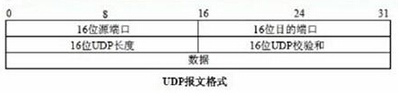
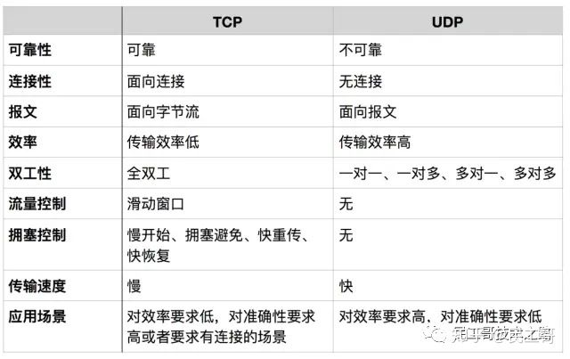

概述
- UDP是一种不可靠的、无连接的数据报服务。源主机在传送数据前不需要和目标主机建立连接。数据被冠以源、目标端口号等UDP报头字段后直接发往目的主机。这时，每个数据段的可靠性依靠上层协议来保证。
基础
- UDP报文头部

TCP和UDP的区别
- TCP/UDP都是是传输层协议，但是两者具有不同的特性，同时也具有不同的应用场景，下面以图表的形式对比分析。

面向报文
面向报文的传输方式是应用层交给UDP多长的报文，UDP就照样发送，即一次发送一个报文。因此，应用程序必须选择合适大小的报文。若报文太长，则IP层需要分片，降低效率。若太短，会是IP太小。
面向字节流
面向字节流的话，虽然应用程序和TCP的交互是一次一个数据块（大小不等），但TCP把应用程序看成是一连串的无结构的字节流。TCP有一个缓冲，当应用程序传送的数据块太长，TCP就可以把它划分短一些再传送。
RUDP(Reliable UDP)
RUDP介绍
- 可靠性UDP设计目的是解决：延迟问题.
- 可靠UDP的三边制约关系: 质量, 时延, 成本 .RUDP的不同实现可以有不同的侧重偏向
- RUDP的三个分类:
-
- 无序可靠
-
- 有序可靠
-
- 尽力可靠
RUDP实现之KCP
- KCP是一个快速可靠传输ARQ(Automatic Repeat-reQuest)协议，相比于TCP，KCP以浪费10%-20%的带宽代价，换取比TCP快30%-40%的传输速度，并且最大延迟降低三倍的传输效果.
- KCP主要应用场景: 网络游戏
其他应用经验
- 快速开启一个udp服务
#!/usr/bin/env python
# -*- coding: utf-8 -*-
from socket import socket, AF_INET, SOCK_DGRAM
import time
import sys
def time_server(address):
sock = socket(AF_INET, SOCK_DGRAM)
sock.bind(address)
while True:
msg, addr = sock.recvfrom(8192)
print('Got message from', addr)
resp = "["+time.ctime()+"]" + " recv msg: {}".format(msg)
print resp
sock.sendto(resp.encode('ascii'), addr)
if __name__ == '__main__':
if len(sys.argv) == 2:
time_server(('', int(sys.argv[1])))
else:
time_server(('', 4000))